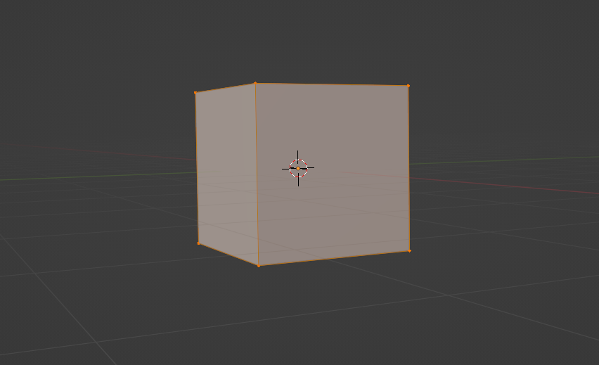
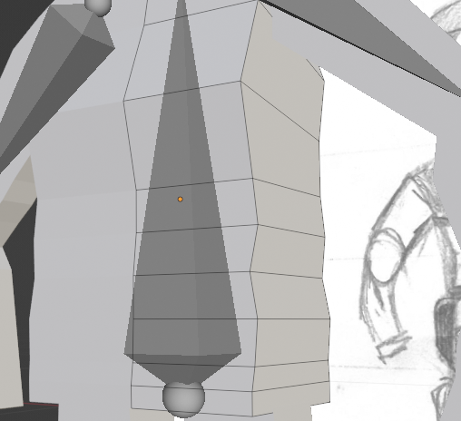
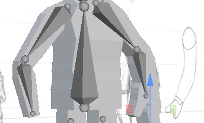
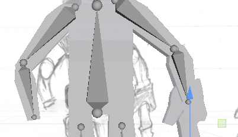
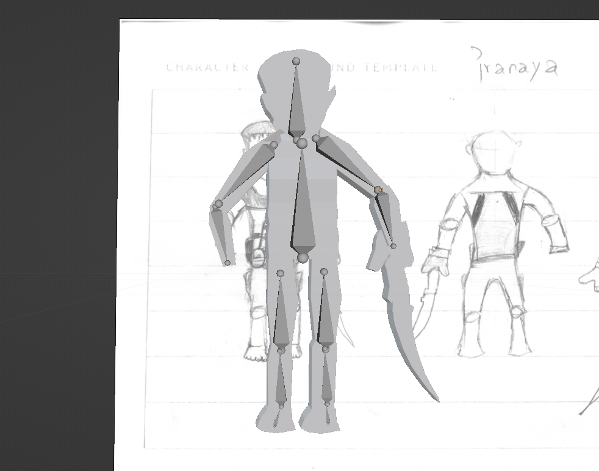
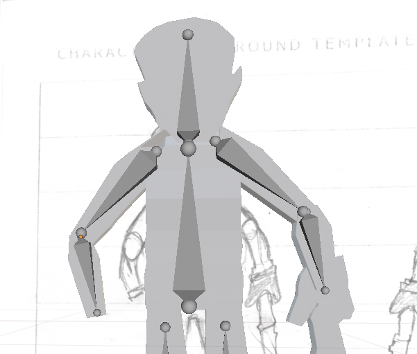
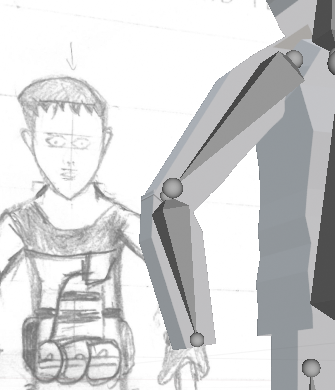
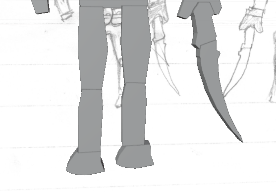
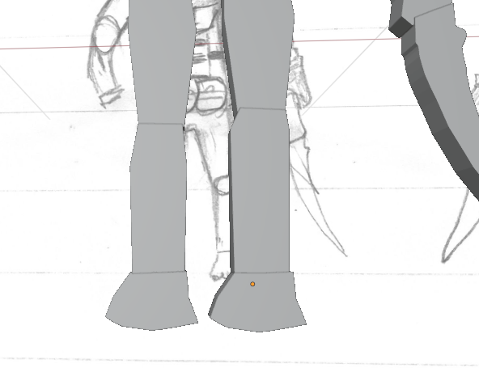
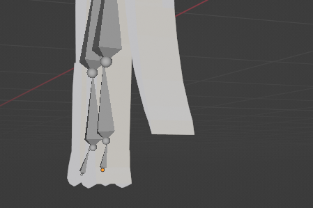

Projetct 1 Development
Torso
Armatures
Arms/hands
Legs
1. Low poly character
Development
Torso
I'm making a 6 head low polly character, where torso of my medium-sized low poly character is simple and angular. I am making midium size character and upper and lower are equal length.
.jpg)
TESTING
I started with adding a cube for the torso part.

Then from the edit mode i add some loop cut for adding detail and control to my model and it help to give the shape of the torso as i want.

After that by using loop cut i make the shape of the torso but little bit the torso looking unshaped.

Feedback task 1
Do you think the layout is easy to follow/ well organised?
"Yes, it is. The objects and body are well organized."
What don't you like about the layout?
"The torso look like unshaped"
Improvements


I improve the shape of the torso, it was unshaped.
TESTING
Final Torso


Task 2
Development
Armatures
I place all the armatures on the right place to provide the provide movement. I place it on head, torso, arms, and legs. It will help to make animation of moving.

Feedback Task 3
Do you think the layout is easy to follow/ well organised?
"The armature you've created is exceptionally well-designed"
What don't you like about the layout?
"The armatures is not perfectly balance.".
"head armature is not balance with the torso armature"
Improvements


It was unbanace with the head armature and torso armature, now i improe that now it is perfectly balance.
TESTING
Final Armatures
Task 3
Development
Arms/hands
I try to make a low 3d character strong arms/hands, where one hand holding a katana showing the power of the character.

Feedback Task 3
Do you think the layout is easy to follow/ well organised?
"I like the way how he show the katana in the hand."

What don't you like about the layout?
"The arms not not really joint with the body."
Improvements
I improve the joining parts of the arm. It wasn't really joint with the torso.
.png)
TESTING
Final Arms/hand


Task 4
Development
legs
I try to make a simple and good looking legs and try to make same shape & shize of legs with good joining.

Feedback Task 4
Do you think the layout is easy to follow/ well organised?
"It simple looking and good looking."
What don't you like about the layout?
"All good but both bottom of the legs looks unmatched. The right bottom of leg looks too much left shifted."
"The right leg is liitle bit smaller then then the left leg."
Improvements
I improve the botttom of the legs which was umatched and the right leg was little bit smaller then the left leg. So i improve that.

TESTING
Final legs
